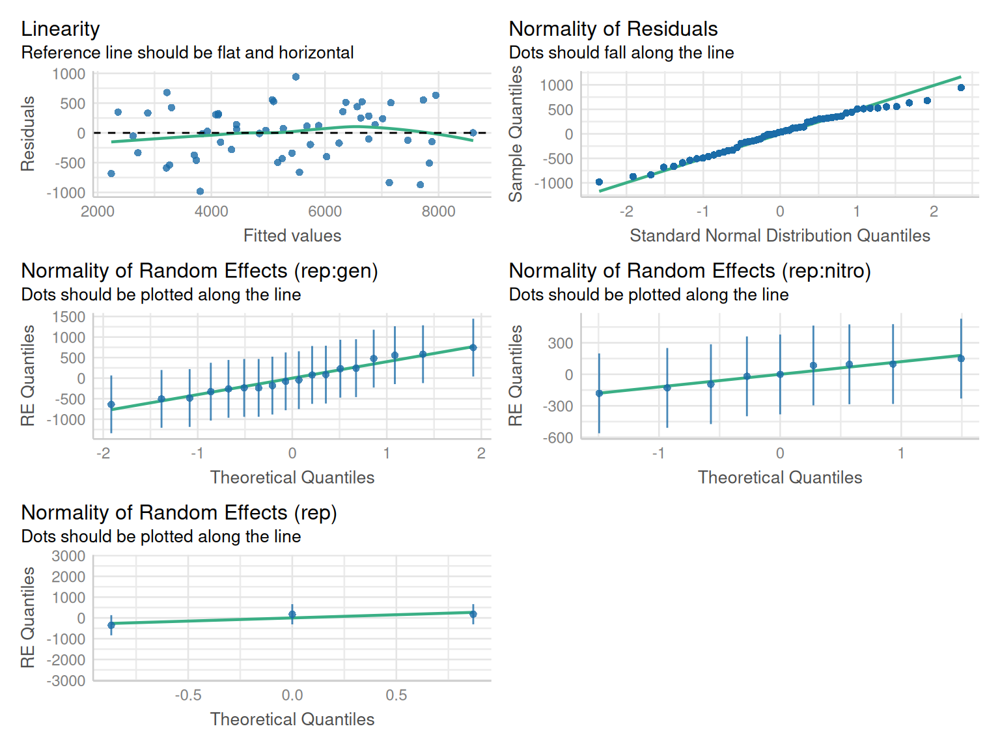
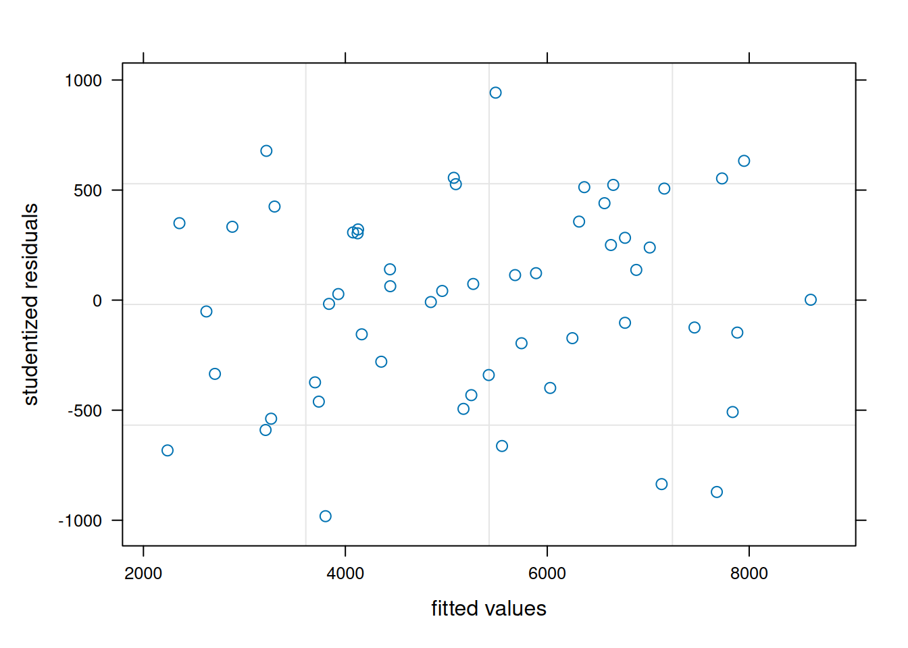

library(lme4); library(lmerTest); library(emmeans)
library(dplyr); library(performance); library(desplot)
library(broom.mixed)9 Strip Plot Design
9.1 Background
Also referred by ‘strip-plot design’ or ‘strip-split-plot design’. This design had an extensive application in the agricultural sciences. In the simplest case, we have two factors A and B. Factor A is applied to whole plots same as in the standard split-plot design. Then factor B is applied to strips (which are just another set of whole plots) that are orthogonal to the original whole plots used for factor A.
The statistical model for this design is:
\[y_{ijk} = \mu + \tau_i + \alpha_j + (\tau\alpha)_{ij} + \beta_k + (\tau\beta)_{ik} + (\alpha\beta)_{jk} + \epsilon_{ijk}\] Where:
\(\mu\)= overall experimental mean, \((\tau\alpha)_{ij}\), \((\tau\beta)_{ik}\), and \(\epsilon_{ijk}\) are the errors used to test factor A, B, and their interaction AB, respectively. \(\alpha\) and \(\beta\) are the main effects applied A and B, and \(\alpha_j\beta_k\) represents the interaction between main factors.
\[ \epsilon_{ijk} \sim N(0, \sigma^2)\]
9.2 Example Analysis
We will start the analysis first by loading the required libraries for this analysis for lmer() and lme() models, respectively.
library(nlme); library(performance); library(emmeans)
library(dplyr); library(desplot); library(broom.mixed)For this example, we will use Rice strip-plot experiment data from the agridat package. This data contains a strip-plot experiment with three reps, variety as the whole plot and nitrogen fertilizer as the whole plot applied in the strips.
rice <- read.csv(here::here("data", "rice_stripplot.csv"))| rep | replication unit |
| nitro | nitrogen fertilizer in kg/ha |
| gen | rice variety |
| row | row (represents gen) |
| col | column (represents nitro) |
| yield | grain yield in kg/ha |
For the sake of analysis, ‘row’ and ‘col’ variables are used to represent ‘nitrogen’ and ‘Gen’ factors. The plot below shows the application of treatments in horizontal and vertical direction in a strip plot design.
9.2.1 Data integrity checks
- Check structure of the data
The ‘rep’, ‘nitro’, and ‘gen’ variables in the data needs to be a factor/character variables and ‘yield’ should be numeric.
str(rice)'data.frame': 54 obs. of 6 variables:
$ yield: int 2373 4076 7254 4007 5630 7053 2620 4676 7666 2726 ...
$ rep : chr "R1" "R1" "R1" "R1" ...
$ nitro: int 0 60 120 0 60 120 0 60 120 0 ...
$ gen : chr "G1" "G1" "G1" "G2" ...
$ col : int 1 3 2 1 3 2 1 3 2 1 ...
$ row : int 1 1 1 3 3 3 4 4 4 2 ...Let’s convert ‘nitro’ from numeric to factor.
rice$nitro <- as.factor(rice$nitro)- Inspect the independent variables
Let’s running a a cross tabulation of independent variables to look at the balance of treatment factors.
table(rice$gen, rice$nitro)
0 60 120
G1 3 3 3
G2 3 3 3
G3 3 3 3
G4 3 3 3
G5 3 3 3
G6 3 3 3It looks balanced with 3 number of observations for each variety and nitrogen level.
- Check the extent of missing data
Next step is to identify if there are any missing observations in the data set.
colSums(is.na(rice))yield rep nitro gen col row
0 0 0 0 0 0 We don’t have any missing values in this data set.
- Inspect the dependent variable
Let’s check the distribution of dependent variable by plotting a histogram.
hist(rice$yield, main = NA, xlab = "yield")No extreme values or skewness is present in the yield values.
9.2.2 Model Building
The goal of this analysis is to evaluate the impact of nitrogen, genotype, and their interaction on rice yield. The variables “rep”, “gen” (nested in rep), and “nitro” (nested in rep) were random effects in the model.
model_lmer <- lmer(yield ~ nitro*gen + (1|rep) +
(1|rep:gen) + (1|rep:nitro),
data = rice)
tidy(model_lmer)# A tibble: 22 × 8
effect group term estimate std.error statistic df p.value
<chr> <chr> <chr> <dbl> <dbl> <dbl> <dbl> <dbl>
1 fixed <NA> (Intercept) 3572. 572. 6.24 17.8 0.00000732
2 fixed <NA> nitro60 1560. 558. 2.80 22.4 0.0104
3 fixed <NA> nitro120 3976. 558. 7.13 22.4 0.000000341
4 fixed <NA> genG2 1363. 717. 1.90 20.9 0.0714
5 fixed <NA> genG3 678. 717. 0.945 20.9 0.355
6 fixed <NA> genG4 487. 717. 0.679 20.9 0.504
7 fixed <NA> genG5 530. 717. 0.739 20.9 0.468
8 fixed <NA> genG6 -364. 717. -0.508 20.9 0.617
9 fixed <NA> nitro60:genG2 219. 741. 0.296 20.0 0.771
10 fixed <NA> nitro120:genG2 -1699. 741. -2.29 20.0 0.0328
# ℹ 12 more rowsmodel_lme <-lme(yield ~ nitro*gen,
random = list(one = pdBlocked(list(
pdIdent(~ 0 + rep),
pdIdent(~ 0 + rep:gen),
pdIdent(~ 0 + rep:nitro)))),
data = rice %>% mutate(one = factor(1)))
summary(model_lme)Linear mixed-effects model fit by REML
Data: rice %>% mutate(one = factor(1))
AIC BIC logLik
651.4204 686.2578 -303.7102
Random effects:
Composite Structure: Blocked
Block 1: repR1, repR2, repR3
Formula: ~0 + rep | one
Structure: Multiple of an Identity
repR1 repR2 repR3
StdDev: 393.4278 393.4278 393.4278
Block 2: repR1:genG1, repR2:genG1, repR3:genG1, repR1:genG2, repR2:genG2, repR3:genG2, repR1:genG3, repR2:genG3, repR3:genG3, repR1:genG4, repR2:genG4, repR3:genG4, repR1:genG5, repR2:genG5, repR3:genG5, repR1:genG6, repR2:genG6, repR3:genG6
Formula: ~0 + rep:gen | one
Structure: Multiple of an Identity
repR1:genG1 repR2:genG1 repR3:genG1 repR1:genG2 repR2:genG2 repR3:genG2
StdDev: 600.1711 600.1711 600.1711 600.1711 600.1711 600.1711
repR1:genG3 repR2:genG3 repR3:genG3 repR1:genG4 repR2:genG4 repR3:genG4
StdDev: 600.1711 600.1711 600.1711 600.1711 600.1711 600.1711
repR1:genG5 repR2:genG5 repR3:genG5 repR1:genG6 repR2:genG6 repR3:genG6
StdDev: 600.1711 600.1711 600.1711 600.1711 600.1711 600.1711
Block 3: repR1:nitro0, repR2:nitro0, repR3:nitro0, repR1:nitro60, repR2:nitro60, repR3:nitro60, repR1:nitro120, repR2:nitro120, repR3:nitro120
Formula: ~0 + rep:nitro | one
Structure: Multiple of an Identity
repR1:nitro0 repR2:nitro0 repR3:nitro0 repR1:nitro60 repR2:nitro60
StdDev: 235.2591 235.2591 235.2591 235.2591 235.2591
repR3:nitro60 repR1:nitro120 repR2:nitro120 repR3:nitro120 Residual
StdDev: 235.2591 235.2591 235.2591 235.2591 641.5963
Fixed effects: yield ~ nitro * gen
Value Std.Error DF t-value p-value
(Intercept) 3571.667 572.1257 36 6.242800 0.0000
nitro60 1560.333 557.9682 36 2.796456 0.0082
nitro120 3976.333 557.9682 36 7.126452 0.0000
genG2 1362.667 717.3336 36 1.899628 0.0655
genG3 678.000 717.3336 36 0.945167 0.3509
genG4 487.333 717.3336 36 0.679368 0.5012
genG5 530.000 717.3336 36 0.738847 0.4648
genG6 -364.333 717.3336 36 -0.507899 0.6146
nitro60:genG2 219.000 740.8516 36 0.295606 0.7692
nitro120:genG2 -1699.333 740.8516 36 -2.293757 0.0277
nitro60:genG3 312.333 740.8516 36 0.421587 0.6758
nitro120:genG3 -357.667 740.8516 36 -0.482778 0.6322
nitro60:genG4 -65.667 740.8516 36 -0.088637 0.9299
nitro120:genG4 -941.000 740.8516 36 -1.270160 0.2122
nitro60:genG5 -28.667 740.8516 36 -0.038694 0.9693
nitro120:genG5 -2066.000 740.8516 36 -2.788682 0.0084
nitro60:genG6 -1053.333 740.8516 36 -1.421787 0.1637
nitro120:genG6 -4691.667 740.8516 36 -6.332802 0.0000
Correlation:
(Intr) nitr60 ntr120 genG2 genG3 genG4 genG5 genG6 n60:G2
nitro60 -0.488
nitro120 -0.488 0.500
genG2 -0.627 0.343 0.343
genG3 -0.627 0.343 0.343 0.500
genG4 -0.627 0.343 0.343 0.500 0.500
genG5 -0.627 0.343 0.343 0.500 0.500 0.500
genG6 -0.627 0.343 0.343 0.500 0.500 0.500 0.500
nitro60:genG2 0.324 -0.664 -0.332 -0.516 -0.258 -0.258 -0.258 -0.258
nitro120:genG2 0.324 -0.332 -0.664 -0.516 -0.258 -0.258 -0.258 -0.258 0.500
nitro60:genG3 0.324 -0.664 -0.332 -0.258 -0.516 -0.258 -0.258 -0.258 0.500
nitro120:genG3 0.324 -0.332 -0.664 -0.258 -0.516 -0.258 -0.258 -0.258 0.250
nitro60:genG4 0.324 -0.664 -0.332 -0.258 -0.258 -0.516 -0.258 -0.258 0.500
nitro120:genG4 0.324 -0.332 -0.664 -0.258 -0.258 -0.516 -0.258 -0.258 0.250
nitro60:genG5 0.324 -0.664 -0.332 -0.258 -0.258 -0.258 -0.516 -0.258 0.500
nitro120:genG5 0.324 -0.332 -0.664 -0.258 -0.258 -0.258 -0.516 -0.258 0.250
nitro60:genG6 0.324 -0.664 -0.332 -0.258 -0.258 -0.258 -0.258 -0.516 0.500
nitro120:genG6 0.324 -0.332 -0.664 -0.258 -0.258 -0.258 -0.258 -0.516 0.250
n120:G2 n60:G3 n120:G3 n60:G4 n120:G4 n60:G5 n120:G5 n60:G6
nitro60
nitro120
genG2
genG3
genG4
genG5
genG6
nitro60:genG2
nitro120:genG2
nitro60:genG3 0.250
nitro120:genG3 0.500 0.500
nitro60:genG4 0.250 0.500 0.250
nitro120:genG4 0.500 0.250 0.500 0.500
nitro60:genG5 0.250 0.500 0.250 0.500 0.250
nitro120:genG5 0.500 0.250 0.500 0.250 0.500 0.500
nitro60:genG6 0.250 0.500 0.250 0.500 0.250 0.500 0.250
nitro120:genG6 0.500 0.250 0.500 0.250 0.500 0.250 0.500 0.500
Standardized Within-Group Residuals:
Min Q1 Med Q3 Max
-1.52993309 -0.52842524 0.05394367 0.51465584 1.46902934
Number of Observations: 54
Number of Groups: 1
Crossed random effects
This type of variance-covariance structure in nlme::lme() is represented by a pdBlocked object with pdIdent elements.
9.2.3 Check Model Assumptions
Let’s evaluate the assumptions of linear mixed models by looking at the residuals and normality of error terms.
check_model(model_lmer, check = c('qq', 'linearity', 'reqq'), detrend=FALSE, alpha =0)
plot(model_lme, resid(., scaled=TRUE) ~ fitted(.),
xlab = "fitted values", ylab = "studentized residuals")
qqnorm(residuals(model_lme))
qqline(residuals(model_lme))
The residuals fit the assumptions of the model well.
9.2.4 Inference
We can evaluate the model for the analysis of variance, for main and interaction effects.
car::Anova(model_lmer, type = "III")Analysis of Deviance Table (Type III Wald chisquare tests)
Response: yield
Chisq Df Pr(>Chisq)
(Intercept) 38.9728 1 4.298e-10 ***
nitro 51.5701 2 6.334e-12 ***
gen 6.8343 5 0.2333
nitro:gen 58.0064 10 8.621e-09 ***
---
Signif. codes: 0 '***' 0.001 '**' 0.01 '*' 0.05 '.' 0.1 ' ' 1anova(model_lme, type = "marginal") numDF denDF F-value p-value
(Intercept) 1 36 38.97256 <.0001
nitro 2 36 25.78512 <.0001
gen 5 36 1.36687 0.2597
nitro:gen 10 36 5.80061 <.0001Analysis of variance showed a significant interaction impact of gen and nitro on rice grain yield.
Next, We can estimate marginal means for nitro and gen interaction effects using the emmeans package.
emm1 <- emmeans(model_lmer, ~ nitro*gen)
emm1 nitro gen emmean SE df lower.CL upper.CL
0 G1 3572 572 17.8 2368 4775
60 G1 5132 572 17.8 3929 6335
120 G1 7548 572 17.8 6345 8751
0 G2 4934 572 17.8 3731 6138
60 G2 6714 572 17.8 5510 7917
120 G2 7211 572 17.8 6008 8415
0 G3 4250 572 17.8 3046 5453
60 G3 6122 572 17.8 4919 7326
120 G3 7868 572 17.8 6665 9072
0 G4 4059 572 17.8 2856 5262
60 G4 5554 572 17.8 4350 6757
120 G4 7094 572 17.8 5891 8298
0 G5 4102 572 17.8 2898 5305
60 G5 5633 572 17.8 4430 6837
120 G5 6012 572 17.8 4809 7215
0 G6 3207 572 17.8 2004 4411
60 G6 3714 572 17.8 2511 4918
120 G6 2492 572 17.8 1289 3695
Degrees-of-freedom method: kenward-roger
Confidence level used: 0.95 emm1 <- emmeans(model_lme, ~ nitro*gen)
emm1Warning in qt((1 - level)/adiv, df): NaNs produced nitro gen emmean SE df lower.CL upper.CL
0 G1 3572 572 0 NaN NaN
60 G1 5132 572 0 NaN NaN
120 G1 7548 572 0 NaN NaN
0 G2 4934 572 0 NaN NaN
60 G2 6714 572 0 NaN NaN
120 G2 7211 572 0 NaN NaN
0 G3 4250 572 0 NaN NaN
60 G3 6122 572 0 NaN NaN
120 G3 7868 572 0 NaN NaN
0 G4 4059 572 0 NaN NaN
60 G4 5554 572 0 NaN NaN
120 G4 7094 572 0 NaN NaN
0 G5 4102 572 0 NaN NaN
60 G5 5633 572 0 NaN NaN
120 G5 6012 572 0 NaN NaN
0 G6 3207 572 0 NaN NaN
60 G6 3714 572 0 NaN NaN
120 G6 2492 572 0 NaN NaN
Degrees-of-freedom method: containment
Confidence level used: 0.95 Note that, confidence intervals were not estimated through emmeans() from lme() model.
lme vs lmer
For strip plot experiment design, fitting nested and crossed random effects is more complicated through nlme. Therefore, it’s more convenient to use lme4 in this case as both models yielded same results in the example shown above.